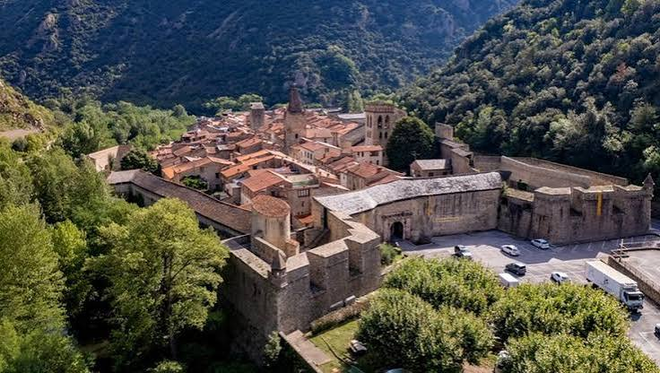

Cité fortifiée de
Villefranche-de-
ConflentRemparts Vauban, patrimoine mondial de l'UNESCO


⟹ Cités Fortifiées Vauban ⟸
1092 : naissance d’une ville frontière. Villefranche-de-Conflent est fondée le 9 avril 1092 par Guillaume Raymond (Guillem Ramon), comte de Cerdagne. Le site est choisi pour sa valeur stratégique exceptionnelle, au confluent de la Têt et du Cady, dans un passage étroit commandant les routes entre la plaine du Roussillon, le Conflent et la Cerdagne. La création d’une « ville franche », bénéficiant de privilèges destinés à attirer habitants et activités, répond à un double objectif : peupler le lieu et verrouiller militairement la vallée.

Du XIe au XIVe siècle : la cité se fortifie. Les premières défenses apparaissent dès la fondation. L’enceinte médiévale suit déjà largement le tracé que l’on connaît aujourd’hui. Au XIVe siècle, sous Pierre IV d’Aragon, dit Pierre le Cérémonieux, les défenses sont renforcées par une série de tours de flanquement semi-circulaires ; des tours protègent également les accès et un fossé complète la défense du front sud. Cette organisation permet à la cité de résister au siège mené en 1374 par l’infant Jacques de Majorque.
Une place au cœur des conflits catalans. Pendant des siècles, Villefranche occupe une position sensible entre les puissances qui se disputent les Pyrénées orientales. Son enceinte protège une petite ville commerçante et administrative, mais sa véritable importance tient au contrôle de la vallée. Les changements de souveraineté et les progrès de l’artillerie imposent régulièrement réparations et adaptations.
1654-1659 : conquête française et nouvelle frontière. Pendant la guerre franco-espagnole, Villefranche est assiégée et prise par les Français en 1654. Le traité des Pyrénées de 1659 rattache définitivement le Roussillon et une partie de la Cerdagne au royaume de France. La cité, autrefois place de la monarchie hispanique, devient alors un verrou avancé du dispositif défensif de Louis XIV face à l’Espagne.
Vauban transforme la ville médiévale. À partir de la fin des années 1660 et surtout lors de ses interventions ultérieures, Vauban adapte les anciennes murailles aux exigences de la guerre moderne. Plutôt que de raser l’enceinte, il exploite avec pragmatisme l’étroitesse du site : remparts renforcés et rehaussés, parapets adaptés à l’artillerie, nouveaux ouvrages, casernes, magasins et dispositifs permettant de battre les approches. La topographie, qui interdit le développement d’une grande enceinte bastionnée classique, conduit à des solutions particulièrement ingénieuses.
Le Fort Libéria et la défense en profondeur. Vauban constate toutefois qu’une ville située au fond d’une gorge peut être dominée par les hauteurs voisines. À partir de 1681, le Fort Libéria est donc construit au-dessus de Villefranche afin de contrôler la montagne et de protéger la cité. L’ensemble est complété par la Cova Bastera, grotte aménagée et casematée. Villefranche devient ainsi un système fortifié en trois dimensions : enceinte dans la vallée, ouvrage dans la montagne et positions souterraines.
Du XVIIIe au XIXe siècle. Les fortifications continuent d’être entretenues et modifiées après Vauban. Au XIXe siècle, l’évolution de l’artillerie entraîne de nouveaux travaux et le Fort Libéria est relié à la ville par un long souterrain escalier. La cité conserve néanmoins son parcellaire médiéval, ses rues étroites, ses portes et une remarquable continuité de fortifications allant du Moyen Âge à l’époque contemporaine.
Un patrimoine reconnu mondialement. La qualité de conservation de cet ensemble fait de Villefranche-de-Conflent un exemple majeur de l’adaptation de Vauban à une fortification préexistante et à un relief extrêmement contraignant. En juillet 2008, ses fortifications sont inscrites au patrimoine mondial de l’UNESCO au sein du bien en série « Fortifications de Vauban ». La cité forme aujourd’hui, avec le Fort Libéria et la Cova Bastera, l’un des ensembles défensifs les plus spectaculaires des Pyrénées françaises.
Villefranche-de-Conflent fait partie des douze sites français retenus par l'UNESCO pour représenter, à travers le monde, le génie de Sébastien Le Prestre de Vauban : sa capacité à adapter chaque système défensif à la géographie d'un lieu plutôt qu'à appliquer un modèle unique.
Chaque site témoigne d'une facette différente de la pensée militaire de Vauban.
— Réseau des sites majeurs de VaubanTrois siècles après son passage, les remparts qui encerclent la cité, le Fort Libéria qui la surplombe et la Cova Bastera creusée dans la roche forment un ensemble cohérent, pensé comme un seul et même système de défense du Conflent.
Fort Libéria accessible par le souterrain des 1000 marches ou par un sentier panoramique, pour prolonger la découverte du génie défensif de Vauban.
Grottes des Canalettes tout près de la cité, pour une incursion spectaculaire dans le monde souterrain du Conflent.
Citadelle de Mont-Louis à une vingtaine de minutes en Train Jaune, autre chef-d'œuvre de Vauban classé UNESCO.
Le Train Jaune qui relie Villefranche-de-Conflent à la Cerdagne sur 63 km de paysages remarquables.